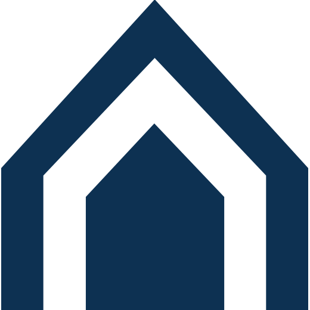

Create is a...describe what Cesium is...
Cesium-based Create ... describe how Create utilized Cesium to its fullest...
For more details, see:
- Create official website
- Direct link to another link here
- Create another link here!
- Click here for Cyber City 3d on GIS Resources website
Key Features
- Supports most mainstream desktop and mobile browsers
- Supports multiple satellite groups
- Allows tracking of multiple satellites in any view
- Supports mutual observers, which allows planning of radio contacts
- Generates pass predictions
- Includes plugin architecture for SPM engines
- List View: A table based view
- 3D View: A globe view, using Cesium
- Passes View: A customisable hybrid view
- Polar View: A polar chart view
- Sky View: A view looking at the horizon
- Timeline View: A timeline of satellite passes
- DX View: Shows which amateur radio callsigns are visible to the satellite